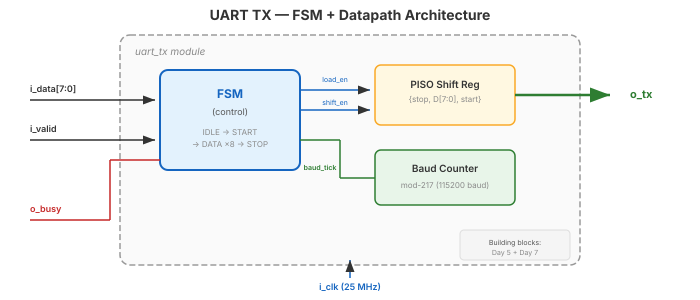

Video 2 of 4 · ~15 minutes
Dr. Mike Borowczak · Electrical & Computer Engineering · CECS · UCF

Three parts you already know: FSM (Day 7) + PISO shift register (Day 5) + modulo-N counter (Day 5).
┌──────┐ i_valid ┌───────┐ baud_tick ┌──────┐
│ IDLE │───────────►│ START │──────────────►│ DATA │
│ │ │ │ │ │
└──────┘ └───────┘ └──┬───┘
▲ │
│ ┌──────┐ baud_tick │ 8 bits
└──────────────│ STOP │◄────────────────────┘
│ │
└──────┘
IDLE: TX=1. Wait for i_valid. Latch data.
START: TX=0 for 217 clocks (one bit period).
DATA: Shift out 8 bits LSB first, one per baud tick.
STOP: TX=1 for 217 clocks. Return to IDLE.
Producer checks o_busy == 0, then asserts i_valid for one cycle with i_data.
UART TX latches data, asserts o_busy, transmits.
Producer must wait for !o_busy before sending next byte.
i_data after the first cycle. The shift register decouples the TX from the producer's timing.
① Decompose: FSM (control) + PISO (data) + counter (baud).
② Four states: IDLE → START → DATA (×8) → STOP.
③ Valid/busy handshake decouples producer from TX timing.
④ Everything here reuses Day 5 + Day 7 building blocks.
Up Next
Video 3 of 4 · ~12 minutes
Building the complete UART TX from scratch.